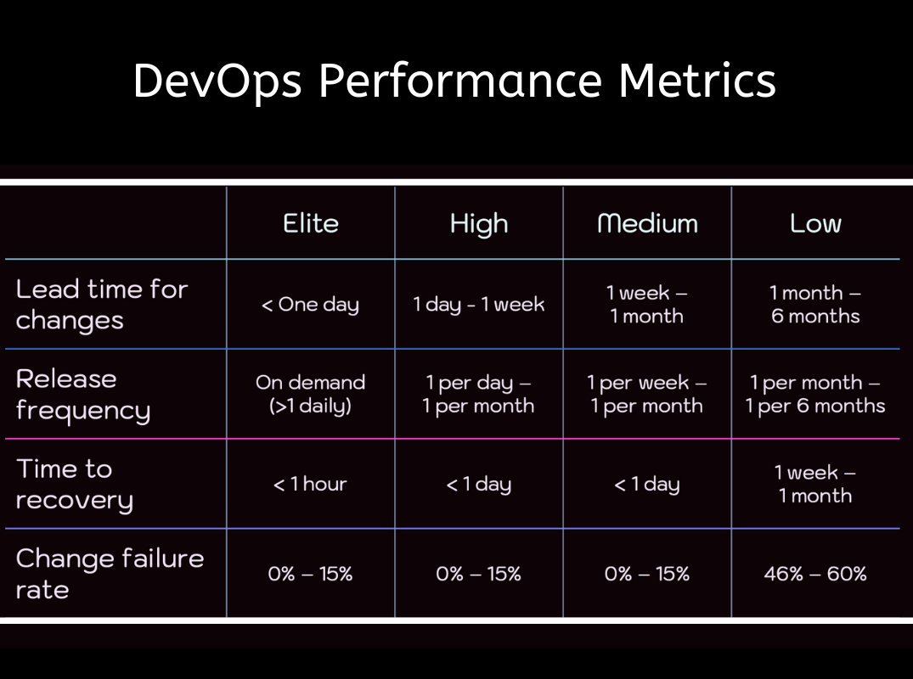
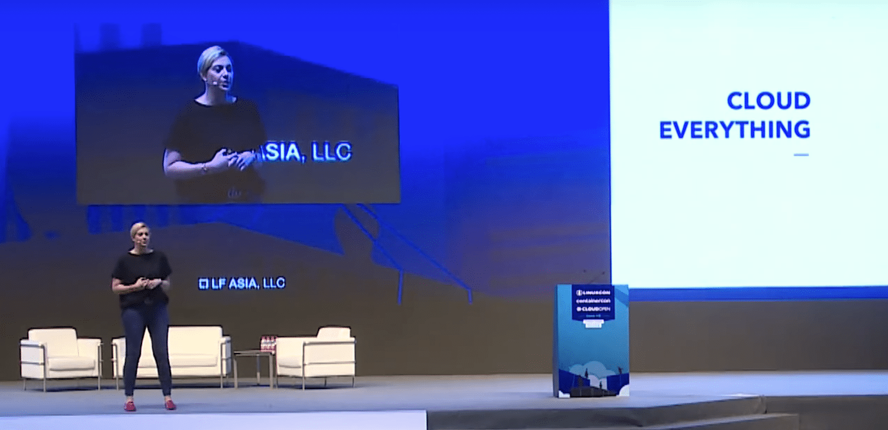
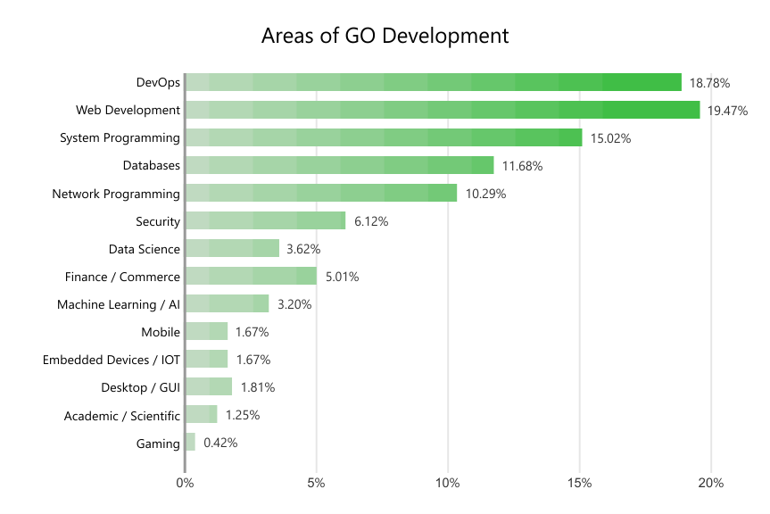
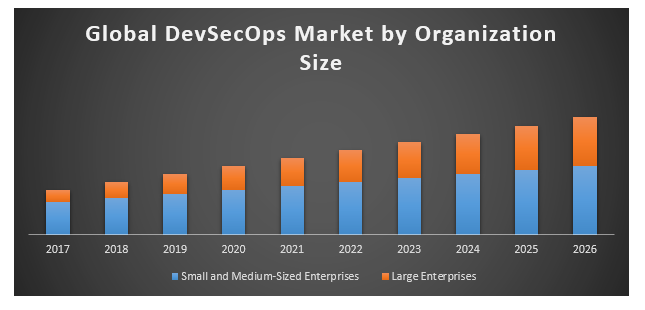
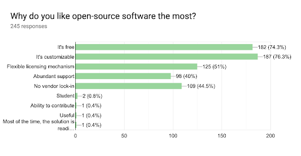
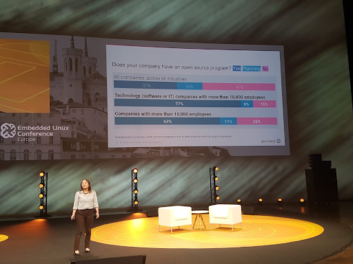
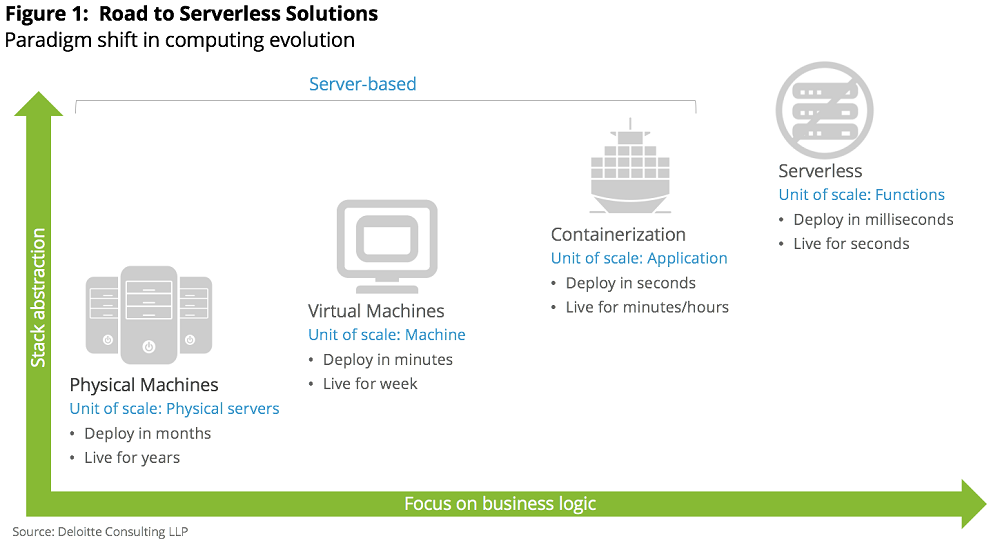
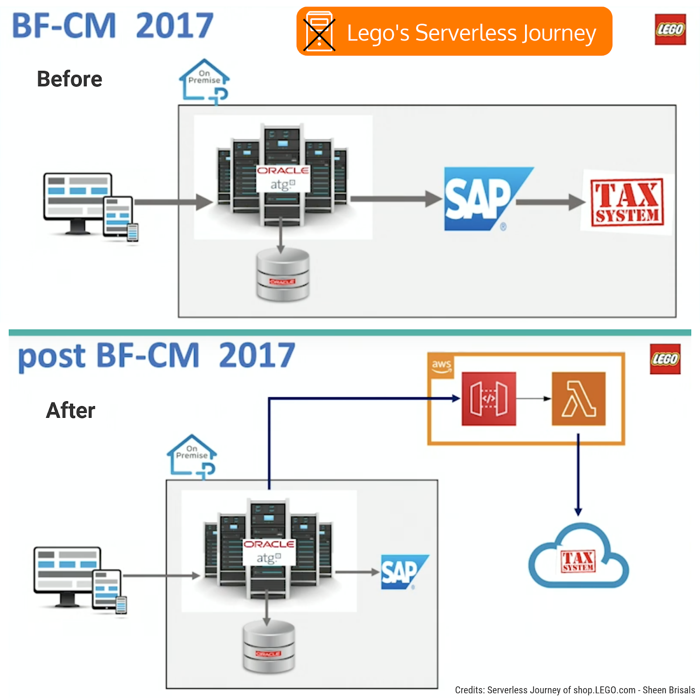
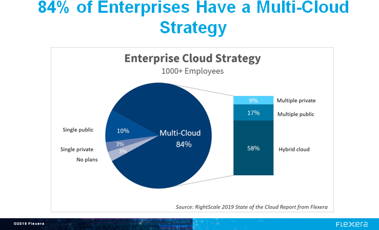
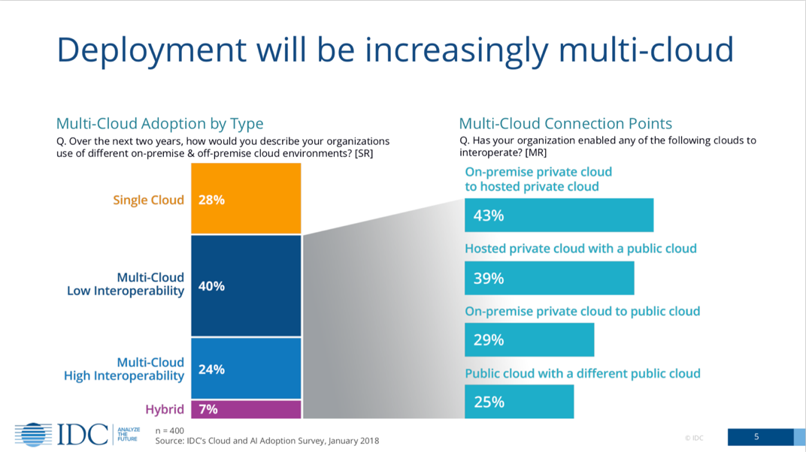

展望 2020 年 DevOps 的发展趋势

Netscape 的创始人 Marc Andreessen 很久之前就谈到过软件是如何吞噬整个世界的。他还说过，当今，每一家公司都可谓是软件公司，它们已经做好准备来接管广阔的经济领域。在 2020 年，您会清晰地看到 DevOps 持续不断的更新是如何改变交付方式的，将软件交付到几乎是无限的市场中。在这个技术竞争激烈的世界中，DevOps 已成为蓬勃发展的必需品了。
导引
虽然每个企业对 DevOps 有着不同的理解，但我们仍然可以将 DevOps 定义为一个团队为了将其工程能力提升到新的高度而采用的一种心态。DevOps 的主要目的是消除工程实践上的障碍，重点是那些存在于想法和实践之间的文化障碍，从而使软件的交付过程变的更好、更快、更廉价和更安全。
无论您怎样称呼 DevOps，它最终都应该归结为自动化，而自动化反过来又应该有助于公司的快速发展、快速交付、快速失败、快速恢复以及快速学习。
从 SDLC（System Development Life Cycle，系统生命周期）模型的出现到今天，情况已经发生了巨大的变化。在 2009 年，DevOps 诞生了，它倡导文化的转型和一些将所有事物都视为代码的技术原则。随后出现了诸如 CI/CD 之类的理念，但是，软件曾经是作为一个巨大的单体被编写的，这个转变过程带来了许多挑战。
因此，在 2011 年引入了微服务架构，它提倡细粒度和松耦合的组件划分方式，其中每个组件都承担特定的职责。
遵循这种松耦合、微服务架构而编写的应用程序被称为云原生应用。当前，众多企业根据其业务需求和目标，正在从虚拟机过渡到 Kubernetes 和 Serverless。
根据 Kelly Shortridge 和 Nicole Forsgren 博士在 Black Hat USA 2019 上发布的幻灯片，在与 DevOps 行业中卓越的实践者进行对标时，有四个因素特别关键，分别是：
- 变更前置时间
- 发布频率
- 恢复时长
- 变更失败率

在本文中，我们将会了解到 DevOps 在未来的发展趋势。
云原生将成为必然
Diamanti 对 500 多位 IT 主管进行了调查。结果表明，从所有方面来看，容器技术已经远远超出了预期，它在一年内迅速成熟，并从开发者试验转向了生产环境。云原生技术将会上升到一个新的高度，尤其是对 Kubernetes 的采用。云原生为公司提供了更大的优势，使其以更快的速度将产品推向市场。
什么是云原生
采用云原生意味着更好的创新、更先进的转型以及更丰富的客户体验。如我在的另一篇文章“ Cloud-Native DevOps”中所述，云原生从根本上促进了云自动化，这里指的是云计算服务的安装、配置和监控的自动化管理，它是关于使用技术在恰当的时间为您的云计算资源做出更可靠的业务决策。
根据 Oracle 对云原生未来的预测，到 2025 年将有 80% 的 IT 企业会把业务迁移到云。CNCF 的调查结果显示，在生产环境中使用云原生技术的企业数量已经增长超过了 200％。

去年，作为云服务提供商的 Cloud Foundry Foundation 开源平台的执行董事 Abby Kearns 在 2018 年 LinuxCon + ContainerCon + CloudOpen China（ LC3）上发表了主题演讲，对云原生及其未来做了更加深入的阐释。
Kearns 说：“云原生技术和云原生应用正在增长，在接下来的 18 个月中，组织正在编写和使用的云原生应用的数量将会增加 100％。” 她补充道：“这意味着您不能再仅限于投资 IT，更需要投资云和云技术。（引自 Abby Kearns 的主题演讲塑造云原生未来）
美国空军是她在演讲中所举的最好的例子之一，她在演讲中谈到了他们已经变得多么敏捷，并且采用了前沿技术和云原生原则。美国空军已经实施了敏捷实践，现在正在利用云技术开发在多云上运行的应用程序。
容器注册服务将呈上升趋势
这一点本来可以包含在云原生部分中。尽管如此，我认为这仍需要特别注意，因为大多数软件公司现在都沉迷于容器注册服务，这些容器注册服务可以帮助开发人员存储、管理制品及其所有依赖，以便实现软件开发生命周期的平稳进行。
就像在版本控制系统（例如 Git）中管理应用程序的源代码一样，管理 Docker 镜像也至关重要。 Docker 提供了类似的管理镜像的功能，这些镜像可以在开发者本地主机上甚至在远程容器注册服务（Docker Hub）上得到管理。
但是，有时这些镜像容易出现许多与安全性相关的问题，并且黑客可以轻松访问它们。因此，现代公司需要一种安全可靠的方式来通过注册服务管理镜像。
对于使用容器化应用和微服务架构的 DevOps 团队而言，容器注册服务已成为了必须具备的条件。随着 Docker 和云原生应用程序的日益普及，容器镜像像管理已成为现代软件开发的重要组成部分。容器注册服务简单的说就是镜像仓库的集合，这些仓库主要用于存储容器镜像。
最近在圣地亚哥举行的 KubeCon 会议上，JFrog 宣布了自己的容器注册服务。基于 Artifactory 的强大功能，JFrog Container Registry 是市场上经过严酷考验的免费容器注册服务。它是可扩展的、混合的、具有 Artifactory 的精美用户界面并由 Artifactory 提供技术支持。
目前市场上其他著名的容器注册服务包括：
- Amazon Elastic Container Registry (ECR)
- Dockerhub
- JFrog Container Registry
- Azure Container Registry
- Google Container Registry
私有容器注册服务允许公司实施自己对容器的管理方式，包括策略、安全、访问控制等。容器注册服务应具有的功能包括完全混合云、Docker 注册服务、Helm 注册服务、通用仓库、远程仓库、虚拟存储库以及丰富的元数据。
哪里需要用到容器注册服务？
有几个原因可以说明容器注册服务的必要性：
随着云原生的发展，我们看到企业级的数字化转型正在进行，使用的工具有 Kubernetes、Docker、Artifactory、Helm 和 Istio 等。全世界都在迅速向容器注册技术过渡，这正是容器化应用快速、安全交付的未来。
混合云争日趋激烈，大多数云提供商都为它们的服务提供了免费的注册服务，因为它们知道注册服务的重要性。
Docker 容器往往会占用大量存储空间，并且需要来回转移。这意味着高昂的存储成本，有时安全性也可能成为一个问题。结果，我们看到一些公司除了使用 Docker 外也使用 Artifactory，并且也使用其他的免费工具来管理容器。很高兴看到 JFrog 现在拥有自己的容器注册服务：）
注册服务可以充当远程、虚拟的容器仓库，其中包含丰富的元数据，这是 DevOps 中的要素之一。
可以获得关于制品的宝贵见解。
Go 和 DevOps 会一起繁荣
尽管 Go 已经有些影响力，但它将对 DevOps 社区产生了更大的影响。大多数 DevOps 工具，例如 Kubernetes、Helm、Docker、etcd、Istio 等都是用 Go 编写的。 Kubernetes 的创造者 Joe Beda 曾写过为什么 Kubernetes 是用 Go 编写的。
由于 Go 可以静态编译成独立的二进制文件，因此非常适合在您无法安装或不想安装依赖项的环境中使用。无需设置整个环境，这可以让您比使用其他编程语言更快地完成工作。

JFrog 在最近于伦敦和圣地亚哥举行的 GopherCon 会议上对 1000 多名开发人员进行了调查，以便更好地了解 Go 社区和对 Go module 的总体看法。
他们发现了什么？
- Go 开发人员投入程度很高
- 超过 82% 的 Go 开发人员使用可以使能 Go module 的 Go 版本，并且现在或预期在 2020 年中期使用该功能的人数也几乎达到了相同的比例。
- Go module 的使用率很高
- Go 在各行各业中得到了广泛使用
- 选择 Go module 很困难
另外，请看一下我的另一篇文章，其中讨论了 为什么 Go 对于 DevOps 如此适合。
安全性将成为更高的优先事项
在软件开发生命周期中，安全性变的比以往任何时候都更为重要。安全性变成了每个人的责任，而不仅仅是安全专家。

尽管 DevSecOps 一词似乎只是另外一个流行词汇，但仍要更加重视安全性。 DevSecOps 在组织内创建安全意识和共享的知识库，以加强软件开发过程中的安全性。今年早些时候，Capital One 漏洞使云安全成为一个令人关注的话题，因此重点是保护公有云中的数据。
三星 Note 7 的灾难在很大程度上解释了为什么安全性在流程开始时以及开发生命周期的每个阶段都如此重要。专家推测，Note 7 手机的问题之一涉及其电池管理系统。该系统监控电流并在电池充满时停止充电过程。系统中的故障导致电池过度充电、变得不稳定并最终爆炸。
此故障修复使三星损失了近 170 亿美元。如果较早发现此问题，他们可以节省很多钱以及品牌的声誉。
要发展一种策略和方法以使组织中的安全性成为必须，请考虑以下几点：
- 从小处着手，从一开始就在开发生命周期的每个阶段都部署安全检查点。
- 对于开发人员，将安全性作为他们工作的一部分，并作为其绩效评估的一部分。
- 开发和运营团队都需要将安全等同于质量。
- 不要将 DevOps 和安全性分开，彻底地结合它们，使其成为您的工程团队的口头禅。
许多公司将采用混沌工程原理来检查系统的稳定性和可靠性，并检查安全的程度。故意破坏系统可以帮助您发现更大的错误，并确保黑客不会在系统中发现任何漏洞。这也将帮助组织先于客户发现错误。DevSecOps 目的是不断地使您的系统比以往更加健壮。
开源将超越边界
开源给开发人员带来的优势和灵活性已引起越来越多的关注。 Synopsys 在最近进行的一项调查中发现，开放源代码正在发展中，几乎 70% 的公司组织正在为开源项目做贡献或拥有开源项目。
为什么要开源？
开源软件非常有助于开发人员个人提高技能。开源为开发人员提供了以下途径：
- 学习解决问题的新技术和有效方法。
- 在项目上进行协作并获得经验。
- 贡献于开源项目会产生一种归属感，它将使您成为有着相同目标和观念的大型社区的一部分。
在最近的印度开源 2019 大会上，我们对近 300 名开源专业人士进行了调查，以下是当我们询问他们喜欢开源软件的原因时的回应。定制化是大多数人喜欢开源软件的事实。

CB Insights 的最新研究估计，开源服务行业在 2019 年将超过 170 亿美元，并且在 2022 年有望达到近 330 亿美元。
微软、谷歌、英特尔和 Facebook 等大型巨头（它们不是开源公司）正在积极地为 GitHub 上的各种项目做出贡献。Google 的员工在 2018 年提供了 5500 次贡献，其中许多贡献已经帮助了较小的独立项目。
对于 Google 的开源软件项目，如 Kubernetes，Istio 和 Knative 的支持有很多，需求很高。随着公司赞助的项目越来越受欢迎，独立开发人员将继续做出贡献。这表明巨人应该挺身而出，帮助开源社区发展。
例如，Microsoft 的 Visual Studio Code 项目总共有超过 19000 个贡献者。在成千上万开发人员的参与下，这些技术巨头从免费的开发人员输入和直接的用户反馈中受益。这使组织可以更快地构建更好的软件。开源技术无疑已经成为主流，并且拥有光明的未来。
Cloud Native Foundation 生态系统主管 Cheryl Hung 在最近的欧洲 Linux Foundation 开源峰会上的演讲中明确指出，大型公司正在致力于开源项目。特别是 Kubernetes，它创建了一个庞大的社区。

Serverless 仍然是个新事物，但却有着光明的未来
毫秒级的部署是未来的趋势，许多公司已经在最大程度上利用 Serverless 架构。Serverless 市场预计到 2021 年将达到 77 亿美元。根据 RightScale 的 2018 年度云状态报告，Serverless 是当今增长最快的云服务模型，年增长率为 75％，并有望在 2020 年超过预期。
当前的 Serverless 选则包括：
- AWS Lambda
- Microsoft Azure
- Google Cloud Platform
- IBM Bluemix/OpenWhisk
为什么开发者更喜欢 Serverless:
- 使开发者更有生产力
- 部署速度更快
- 扩展能力更强
- 用户体验更好
- 费用和基础设施问题更少

2017 年 5 月，微软首席执行官 Satya Nadella 指出 Serverless 的潜力及其改变云计算机制的能力。
他说：“但是，我认为将彻底改变我们对逻辑的看法的一件事是 Serverless … 因此，Serverless 将在根本上改变不仅是后端计算的经济价值，而且它将成为未来分布式计算的核心。”
乐高的 Serverless 之旅
乐高 的 Serverless 之旅将向您展示如何从一小步开始并取得巨大成功。黑色星期五和网络星期一的灾难使他们转向了 Serverless 。 乐高拥有一个包含 Oracle ATG 的旧系统，其中八台服务器与同一个数据库进行通信，而 SAP 则在后端支持 TAX 系统。
上述旧版系统参加了每年的黑色星期五和网络星期一的活动，当系统无法控制夜间高峰时，这变成了一场灾难。结果，发生了一系列事件，其中 TAX 系统先关闭，这又使 SAP 宕机，结果整个乐高电子商务平台停顿了 2 个小时，这使他们蒙受了巨大损失。

此事件使他们想到了 Serverless，为什么？
灾难发生后，乐高团队决定迁移到云中，拥有一个简单的 API，将 Lambda 置于其后，然后使用它。这是乐高转向 Serverless 的第一步。这也促使他们也转向了微服务架构，甚至转向了 DevOps 和自动化。
乐高团队一开始只用单个 Lambda 来计算营业税，现在已经全部使用了 Lambda。
整个话题都在这里。
数字化转型将为他人树立榜样
我们将会看到有许多组织摆脱他们的舒适区，并尝试新技术，甚至医疗、金融机构、政府等传统行业也将通过采用云原生和 DevOps 实践来实现数字化转型，从而得到整体大幅改善。让我们看看一些近期有趣的案例研究。
快递服务公司联邦快递是如何找到实现数字化转型方式的？联邦快递没有足够的 IT 专业人员来使用现代 Cloud-Native 和 DevOps 流程，但并它并没有止步于此。 联邦快递知道其工程师人才库中缺乏合适技能的问题，因此首席信息主管 Rob Carte 找到了解决方案。联邦快递成了一所大学，开始教自己的工程师先进的计算机技能和现代的软件开发方式。
为此，创建团队并将其命名为 The Cloud Dojo。 Dojo 由一个跨职能的团队组成的，这个团队由专业云开发人员、安全专家和运营专家共同组成，并聚集到一个位置。其目的是培训团队，使其将传统工程与现代云实践，包括 DevOps、云原生、重写旧应用程序以在云中运行和自动化相结合。这个称为 Cloud Dojo 的土著团队已经重新培训了 2500 多名软件程序员。
迄今为止，联邦快递已经为云化重写了 200 多个生产级的应用程序，以及 300 多个应用程序可供使用。因此联邦快递的 Cloud Dojo 团队获得了 2019 CIO 100 奖。阅读整个故事和联邦快递的首席信息主管 Carter 的提示。
Box 的数字化转型之路
几年前，在 Box 公司，要花六个月的时间来构建新的微服务，快进到今天，则只需要几天。他们如何设法加快速度？有两个关键因素使之成为可能：
- Kubernetes 技术
- DevOps 实践
Box 成立于 2005 年，是一个单体的 PHP 应用程序，随着时间的推移已经发展到数百万行代码。应用程序的整体性导致他们建立了非常紧密耦合的设计。这导致他们无法按照自己想要的速度进行创新。应用程序一部分中的错误将导致他们回滚整个应用程序。
如此多的工程师使用数百万行代码在同一个代码库上工作，错误并不少见。越来越难及时的发布功能，甚至无法修复错误。因此，他们寻找解决方案，并决定采用微服务方法。但是后来他们又开始面临另外一些问题，这些问题随着 Kubernetes 的采用得到了解决。
请观看 Box 高级工程经理 Kunal Parmar 的完整视频讲座。
多云将蓬勃发展到新的高度
多云将蓬勃发展，大多数企业都有混合云策略。许多应用程序被编写为在本地和非本地运行，并可能在多个公有云环境中运行。谷歌的云服务平台 Anthos 证明了多云对于软件公司来说是灵活且经济高效的。
Azure 和 AWS 作为该领域的领导者将决定多云的未来。
根据最近的 RightScale 2019 云状态报告，可以看到 84% 的企业具有多云策略。

多云与当今不断增长的市场趋势高度相关。根据 IDC 最近的一项名为多云世界中的云遣返加速的调查，多云最能描述当今的云现实。

尽管有关云成本优化和供应商锁定的讨论很多，但多云在这里解决了一些关键性问题，例如：避免供应商锁定、成本优化、安全性、数据主权和减少停机时间等。
拥抱 DevOps 只是对话的开始，还有很长的路要走。公司的数量每天都在增加，因此对云的依赖使 DevOps 市场成为一个很大的市场。Allied Market Research估计，到 2023 年，全球 DevOps 市场将以 18.7% 的复合年增长率达到 94 亿美元。 DevOps 将开发和运营整合在一起，为团队提供了更高的信心和自由度，使其能够以更快的速度和质量进行交付。
DevOps 尚未完成增长，它日新月异，发展前景广阔。我们都知道，根据 Forrester 的说法，2018 年是企业 DevOps 年。实施 DevOps 实践的企业从故障中恢复的速度提高了 24 倍，并且在补救安全问题上花费的时间减少了 50%，事实证明，DevOps 可以带来更快乐、更投入的团队。
我希望这些 DevOps 趋势可以使您对市场的发展方向以及如何为敏捷和快速发布做好准备。